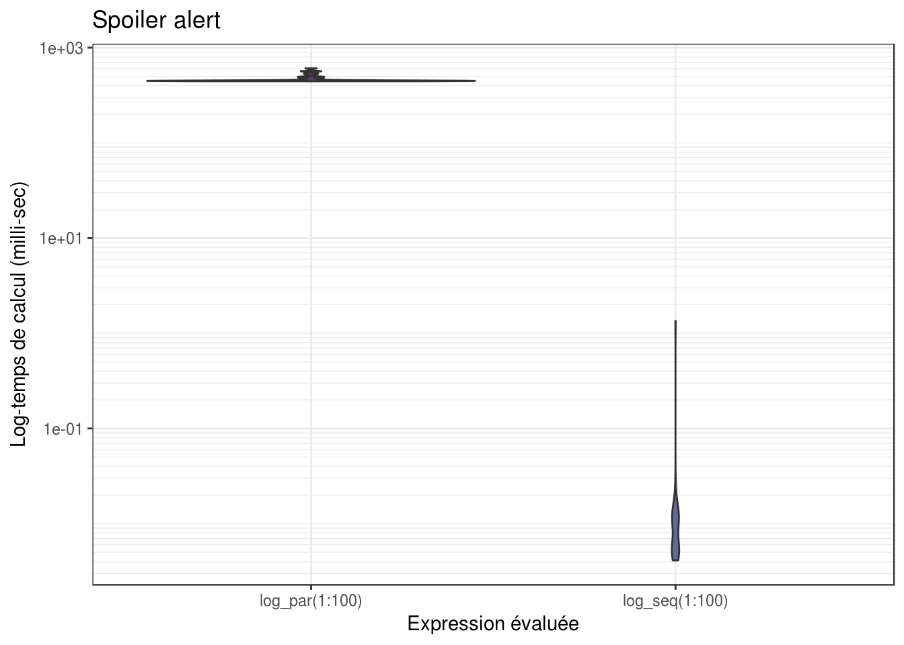
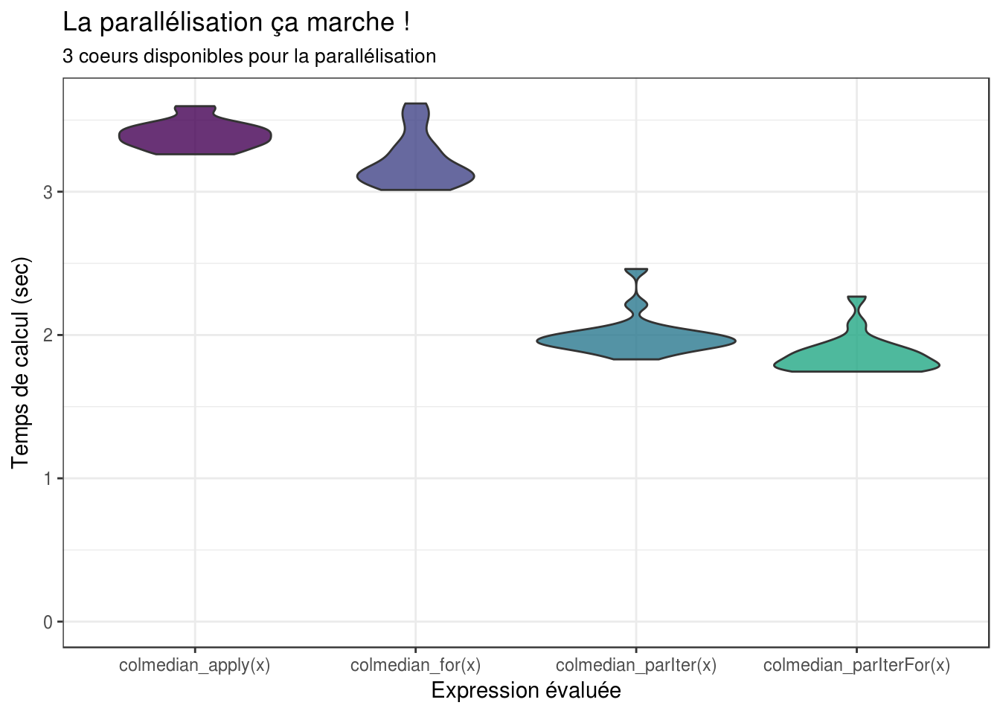
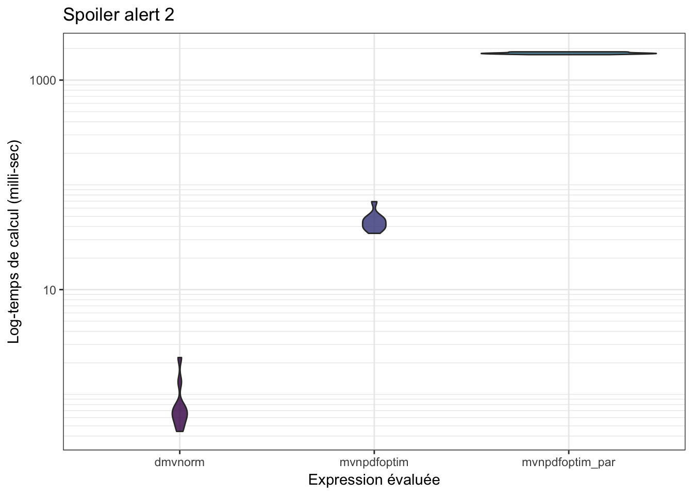

6 Parallélisation du code R
6.1 Introduction à l’execution parallèle sous R
En dehors de l’optimisation du code et des algorithmes, une autre façon d’obtenir un code performant est de tirer profit des architectures parallèles des ordinateurs modernes. Il s’agit alors de paralléliser son code afin de faire des opérations simultanées sur des parties distinctes d’un même problèmes, en utilisant différent cœurs de calcul. On ne réduit pas le temps de calcul total nécessaire, mais l’ensemble des opérations s’exécute plus rapidement.
Il existe un nombre non négligeable d’algorithmes qui sont d’un “parallélisme embarrassant”, c’est-à-dire dont les calculs peuvent se décomposer en plusieurs sous-calculs indépendants. En statistique, il est ainsi souvent facile et direct de paralléliser selon les différentes observations ou selon les différentes dimensions. Typiquement, il s’agit d’opérations que l’on peut écrire sous la forme de boucle dont les opérations sont indépendantes d’une itération de la boucle à l’autre.
Les opérations nécessaires pour l’établissement d’un code parallèle sont les suivantes :
Démarrer \(m\) processus “travailleurs” (i.e. cœurs de calcul) et les initialiser
Envoyer les fonctions et données nécessaires pour chaque tache aux travailleurs
Séparer les taches en \(m\) opérations d’envergure similaire et les envoyer aux travailleurs
Attendre que tous les travailleurs aient terminer leurs calculs et obtenir leurs résultats
Rassembler les résultats des différents travailleurs
Arrêter les processus travailleurs
Selon les plateformes, plusieurs protocoles de communications sont disponibles entre les cœurs. Sous les systèmes UNIX, le protocole Fork est le plus utilisé, mais il n’est pas disponible sous Windows où on utilise préférentiellement le protocole PSOCK. Enfin, pour les architecture de calcul distribuée où les cœurs ne se trouvent pas nécessairement sur le même processeur physique, on utilise généralement le protocole MPI. L’avantage des packages parallel et doParallel est que la même syntaxe permettra d’exécuter du code en parallèle quelque soit le protocole de communication retenu.
Il existe un nombre important de packages et d’initiatives permettant de faire du calcul en R. Depuis R 2.14.0, le package parallel est inclus directement dans R et permet de démarrer et d’arrêter un “cluster” de plusieurs processus travailleur (étape 1). En plus du package parallel, on va donc utiliser le package doParallel qui permet de gérer les processus travailleurs et la communication (étapes 1) et l’articulation avec le package foreachqui permet lui de gérer le dialogue avec les travailleurs (envois, réception et rassemblement des résultats - étapes 2, 3, 4 et 5).
6.2 Première fonction parallèle en R
À vous de jouer !
On va commencer par écrire une fonction simple qui calcule le logarithme \(n\) nombres:
Déterminez combien de coeurs sont disponibles sur votre marchine grâce à la fonction
parallel::detectCores().À l’aide de la fonction
parallel::makeCluster(), créez un cluster de coeur (en prenant garde à laisser un coeur disponible pour traiter les autres processus) et déclarer ce cluser via la fonctiondoParallel::registerDoParallel().À l’aide de l’opérateur
%dopar%du packageforeach, calculez le log des \(n\) nombres en parallèle et concaténer les résultats dans un vecteur.Fermez enfin les connections de votre cluster via la fonction
parallel::stopCluster(cl).Comparez le temps d’éxecution avec celui d’une fonction séquentielle sur les 100 premiers entiers, grâce à la commande :
microbenchmark(log_par(1:100), log_seq(1:100), times=10)
library(microbenchmark)
library(parallel)
library(foreach)
library(doParallel)
log_par <- function(x){
Ncpus <- parallel::detectCores() - 1
cl <- parallel::makeCluster(Ncpus)
doParallel::registerDoParallel(cl)
res <- foreach(i=1:length(x), .combine='c') %dopar% {
log(x[i])
}
parallel::stopCluster(cl)
return(res)
}
log_seq <- function(x){
# res <- numeric(length(x))
#
# for(i in 1:length(x)){
# res[i] <- log(x[i])
# }
#
# return(res)
return(log(x))
}
mb <- microbenchmark(log_par(1:100), log_seq(1:100), times=50)
La version parallèle tourne beaucoup plus lentement… Car en fait, si les tâches individuelles sont trop rapides, R va passer plus de temps à communiquer avec les cœurs, qu’à faire les calculs effectifs.
Il faut qu’une itération de la boucle soit relativement longue pour que le calcul parallèle apporte un gain en temps de calcul !
En augmentant \(n\), on observe une réduction de la différence entre les 2 implémentations (le temps de calcul en parallèle augmente très lentement comparé à l’augmentation de celui de la fonction séquentielle).
NB : les itérateurs d’itertools sont très performants mais ne peuvent servir que lorsque le code à l’intérieur du foreach est vectorisé (il est toujours possible de vectoriser le code à l’intérieur, par exemple avec une fonction de type apply). Ils minimisent le nombre de communication entre les coeurs.
6.3 Parallélisation efficace
On va maintenant se pencher sur un autre cas d’utilisation. Imaginons que l’on ait un grand tableau de données de taille comportant 10 observations pour 100 000 variables (e.g. des mesures de génomique), et que l’on veuille calculer la médiane pour chacune de ces variables.
x <- matrix(rnorm(1e6), nrow=10)
dim(x)## [1] 10 100000Pour un utilisateur averti de R, une telle opération se programme facilement à l’aide de la fonction apply :
colmedian_apply <- function(x){
return(apply(x, 2, median))
}
system.time(colmedian_apply(x))## user system elapsed
## 2.609 0.000 2.609En réalité, une boucle for n’est pas plus lente à condition d’être bien programmée :
colmedian_for <- function(x){
ans <- rep(0, ncol(x))
for (i in 1:ncol(x)) {
ans[i] <- median(x[,i])
}
}
system.time(colmedian_for(x))## user system elapsed
## 2.464 0.000 2.464microbenchmark(colmedian_apply(x), colmedian_for(x), times=20)## Unit: seconds
## expr min lq mean median uq max
## colmedian_apply(x) 2.57899 2.644573 2.746615 2.705471 2.777248 3.319525
## colmedian_for(x) 2.39265 2.485342 2.598944 2.582138 2.683714 2.934028
## neval
## 20
## 20À vous de jouer !
Essayons d’améliorer encore ce temps de calcul en parallélisant :1 . Parallélisez le calcul de la médiane de chacune des 100 000 variables. Observe-t-on un gain en temps de calcul ?
- Proposez une implémentation alternative grâce à la fonction
itertools::isplitIndices()qui permet de séparer vos données (les \(n\) nombres) en autant de groupes que vous avez de coeurs. Comparez à nouveau les temps de calcul.
colmedian_par <- function(x){
Ncpus <- parallel::detectCores() - 1
cl <- parallel::makeCluster(Ncpus)
doParallel::registerDoParallel(cl)
res <- foreach::foreach(i=1:ncol(x), .combine='c')%dopar%{
return(median(x[,i]))
}
parallel::stopCluster(cl)
return(res)
}
system.time(colmedian_par(x))## user system elapsed
## 22.395 1.321 24.778library(itertools)
colmedian_parIter <- function(x){
Ncpus <- parallel::detectCores() - 1
cl <- parallel::makeCluster(Ncpus)
doParallel::registerDoParallel(cl)
iter <- itertools::isplitIndices(n=ncol(x), chunks = Ncpus)
res <- foreach::foreach(i=iter, .combine='c')%dopar%{
return(apply(x[, i], 2, median))
}
parallel::stopCluster(cl)
return(res)
}
system.time(colmedian_parIter(x))## user system elapsed
## 0.036 0.026 1.850colmedian_parIterFor <- function(x){
Ncpus <- parallel::detectCores() - 1
cl <- parallel::makeCluster(Ncpus)
doParallel::registerDoParallel(cl)
iter <- itertools::isplitIndices(n=ncol(x), chunks = Ncpus)
res <- foreach(i=iter, .combine='c') %dopar% {
xtemp <- x[,i]
ans <- rep(0, ncol(xtemp))
for (j in 1:ncol(xtemp)) {
ans[j] <- median(xtemp[,j])
}
return(ans)
}
parallel::stopCluster(cl)
return(res)
}
system.time(colmedian_parIterFor(x))## user system elapsed
## 0.065 0.023 1.785mb <- microbenchmark(colmedian_apply(x),
colmedian_for(x),
colmedian_parIter(x),
colmedian_parIterFor(x), times=20)
mb## Unit: seconds
## expr min lq mean median uq
## colmedian_apply(x) 3.261284 3.335229 3.397566 3.391059 3.451899
## colmedian_for(x) 3.012508 3.084203 3.209585 3.143014 3.284979
## colmedian_parIter(x) 1.830079 1.918276 1.993144 1.966710 2.017255
## colmedian_parIterFor(x) 1.744435 1.771207 1.863021 1.833185 1.892802
## max neval
## 3.596851 20
## 3.615660 20
## 2.460515 20
## 2.267777 20
Le package itertools permet de séparer facilement des données ou des taches (étape 3) tout en minimisant les communiquations avec les différents travailleurs. Il s’appuie sur une implémentation des itérateurs en R. Son utilisation nécessite néanmoins de vectoriser le code à l’intérieur du foreach. Expérimentez avec le petit code ci-dessous :
myiter <- itertools::isplitIndices(n=30, chunks = 3)
# Une première fois
iterators::nextElem(myiter)## [1] 1 2 3 4 5 6 7 8 9 10# Une deuxième fois... Oh ?!
iterators::nextElem(myiter)## [1] 11 12 13 14 15 16 17 18 19 20# Encore !
iterators::nextElem(myiter)## [1] 21 22 23 24 25 26 27 28 29 30# Encore ?
iterators::nextElem(myiter)## Error: StopIteration6.4 Parallélisation dans notre exemple fil rouge
À vous de jouer !
1 . À partir de la fonction
mvnpdfoptim()et/oumvnpdfsmart(), proposez une implémentation parallélisant les calculs sur les observations (colonnes de \(x\))
- Comparez les temps de calcul sur 10 000 observations
n <- 10000
mb <- microbenchmark::microbenchmark(mvtnorm::dmvnorm(matrix(1.96, nrow = n, ncol = 2)),
mvnpdfoptim(x=matrix(1.96, nrow = 2, ncol = n), Log=FALSE),
mvnpdfoptim_par(x=matrix(1.96, nrow = 2, ncol = n), Log=FALSE),
times=10L)
mb## Unit: microseconds
## expr
## mvtnorm::dmvnorm(matrix(1.96, nrow = n, ncol = 2))
## mvnpdfoptim(x = matrix(1.96, nrow = 2, ncol = n), Log = FALSE)
## mvnpdfoptim_par(x = matrix(1.96, nrow = 2, ncol = n), Log = FALSE)
## min lq mean median uq max neval
## 618.28 714.604 886.9507 882.869 1061.721 1188.519 10
## 17761.52 17945.602 20565.9590 19587.459 20868.068 29376.875 10
## 583349.14 613340.267 676758.4185 662754.130 710727.523 805168.680 10
6.5 Conclusion
La parallélisation permet de gagner du temps, mais il faut d’abord bien optimiser son code. Quand on parallélise un code, le gain sur la durée d’exécution dépend avant tout du ratio entre le temps de communication et le temps de calcul effectif pour chaque tache.